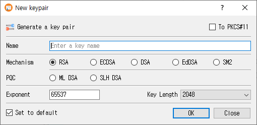

New Key Pair Dialog Guide
This guide explains the New keypair dialog in CertMan. The dialog is opened from Tools > New keypair (shortcut: Shift+F1). A database must be connected before you can open it.

Create a key pair
- Enter a unique, recognizable value in Name. The name is required.
- Select a Mechanism. Choose one of the standard algorithms, or a post-quantum algorithm in the PQC row.
- Select the parameter or key length from the dropdown. The available choices depend on the selected mechanism.
- For RSA, review or change Exponent. It defaults to
65537. This field is disabled for algorithms that do not use an RSA exponent. - Optionally select a key storage destination, if available and configured.
- Select Set to default if you want this algorithm and parameter selection to be preselected the next time the dialog opens.
- Click OK to generate and save the key pair. Click Close to leave without generating it.
After successful generation, CertMan stores the key pair in the connected database, refreshes the KeyPair list, and reports Key pair generated. If generation fails, the dialog displays an error.
Fields and options
| Control | Purpose |
|---|---|
| Name | Database name for the key pair. It cannot be empty. |
| Mechanism | Select RSA, ECDSA, DSA, EdDSA, or SM2. |
| PQC | Select ML-DSA or SLH-DSA, the post-quantum algorithm choices. |
| Key Length / parameter dropdown | Choose the algorithm-specific size, curve, or parameter set. The label changes to match the selected algorithm. |
| Exponent | RSA public exponent; the initial value is 65537. |
| To PKCS#11 | Generate using a configured PKCS#11 token or HSM. This option is unavailable if the PKCS#11 provider is not loaded. |
| To KMIP | Generate through KMIP. This option is shown in Pro and requires suitable KMIP configuration. |
| Set to default | Save the selected algorithm, parameter, and HSM choice as the dialog's next default. |
| OK | Generate and save the key pair. |
| Close | Close the dialog without submitting the form. |
Algorithm parameters
The parameter dropdown is populated for the selected mechanism:
| Mechanism | Choices provided by the application |
|---|---|
| RSA | Key sizes: 1024, 2048, 3072, 4096, or 8192 bits. |
| ECDSA | Named elliptic curves, including prime256v1, secp256k1, secp384r1, and secp521r1. The full list is available in the dropdown. |
| DSA | Key sizes: 1024, 2048, or 3072 bits. |
| EdDSA | Ed25519 or Ed448. |
| SM2 | SM2 parameter. |
| ML-DSA | ML-DSA-44, ML-DSA-65, or ML-DSA-87. |
| SLH-DSA | SHA2 or SHAKE parameter sets at 128-, 192-, or 256-bit security levels, with s and f variants. |
Availability and storage notes
- The unlicensed version selects RSA and disables the other mechanism choices.
- The To PKCS#11 option is enabled only when the PKCS#11 context is available. PKCS#11 settings and a usable token/session are also required when generating.
- To KMIP appears in Pro. KMIP supports the mechanisms implemented by the application; some mechanism choices are disabled while KMIP is selected.
- ML-DSA and SLH-DSA use the application's software key generation path even if PKCS#11 is selected; they are not generated as PKCS#11 keys by this dialog implementation.
- Key generation requires a connected database. Internal private keys are encrypted when CertMan's private-key password feature is enabled.
Related implementation
This guide is based on images/new_key_dlg.png, src/CertMan/new_key_dlg.ui, src/CertMan/new_key_dlg.h, src/CertMan/new_key_dlg.cpp, and the Tools > New keypair action in src/CertMan/mainwindow.cpp.